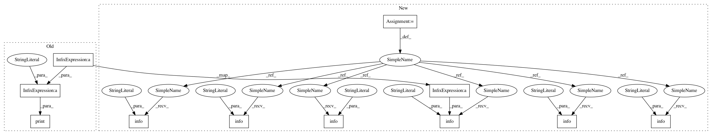

185d35f6a8c479d376cd62bb3014f4df8c5544a6,art/attacks/fast_gradient_unittest.py,TestFastGradientMethod,setUpClass,#Any#,41
Before Change
scores = get_labels_np_array(cls.classifier_py.predict(x_train))
acc = np.sum(np.argmax(scores, axis=1) == np.argmax(y_train, axis=1)) / y_train.shape[0]
print("\n[PyTorch, MNIST] Accuracy on training set: %.2f%%" % (acc * 100))
scores = get_labels_np_array(cls.classifier_py.predict(x_test))
acc = np.sum(np.argmax(scores, axis=1) == np.argmax(y_test, axis=1)) / y_test.shape[0]
print("\n[PyTorch, MNIST] Accuracy on test set: %.2f%%" % (acc * 100))
After Change
cls.classifier_k.fit(x_train, y_train, batch_size=BATCH_SIZE, nb_epochs=2)
scores = cls.classifier_k._model.evaluate(x_train, y_train)
logger.info("[Keras, MNIST] Accuracy on training set: %.2f%%", (scores[1] * 100))
scores = cls.classifier_k._model.evaluate(x_test, y_test)
logger.info("[Keras, MNIST] Accuracy on test set: %.2f%%", (scores[1] * 100))
// Create basic CNN on MNIST using TensorFlow
cls.classifier_tf = cls._cnn_mnist_tf([28, 28, 1])
cls.classifier_tf.fit(x_train, y_train, nb_epochs=2, batch_size=BATCH_SIZE)
scores = get_labels_np_array(cls.classifier_tf.predict(x_train))
acc = np.sum(np.argmax(scores, axis=1) == np.argmax(y_train, axis=1)) / y_train.shape[0]
logger.info("[TF, MNIST] Accuracy on training set: %.2f%%", (acc * 100))
scores = get_labels_np_array(cls.classifier_tf.predict(x_test))
acc = np.sum(np.argmax(scores, axis=1) == np.argmax(y_test, axis=1)) / y_test.shape[0]
logger.info("[TF, MNIST] Accuracy on test set: %.2f%%", (acc * 100))
// Create basic PyTorch model
cls.classifier_py = cls._cnn_mnist_py()
x_train, x_test = np.swapaxes(x_train, 1, 3), np.swapaxes(x_test, 1, 3)
cls.classifier_py.fit(x_train, y_train, nb_epochs=2, batch_size=BATCH_SIZE)
scores = get_labels_np_array(cls.classifier_py.predict(x_train))
acc = np.sum(np.argmax(scores, axis=1) == np.argmax(y_train, axis=1)) / y_train.shape[0]
logger.info("[PyTorch, MNIST] Accuracy on training set: %.2f%%", (acc * 100))
scores = get_labels_np_array(cls.classifier_py.predict(x_test))
acc = np.sum(np.argmax(scores, axis=1) == np.argmax(y_test, axis=1)) / y_test.shape[0]
logger.info("[PyTorch, MNIST] Accuracy on test set: %.2f%%", (acc * 100))
def test_mnist(self):
// Define all backends to test
backends = {"keras": self.classifier_k,
In pattern: SUPERPATTERN
Frequency: 9
Non-data size: 11
Instances
Project Name: IBM/adversarial-robustness-toolbox
Commit Name: 185d35f6a8c479d376cd62bb3014f4df8c5544a6
Time: 2018-09-26
Author: Maria-Irina.Nicolae@ibm.com
File Name: art/attacks/fast_gradient_unittest.py
Class Name: TestFastGradientMethod
Method Name: setUpClass
Project Name: IBM/adversarial-robustness-toolbox
Commit Name: 185d35f6a8c479d376cd62bb3014f4df8c5544a6
Time: 2018-09-26
Author: Maria-Irina.Nicolae@ibm.com
File Name: art/attacks/fast_gradient_unittest.py
Class Name: TestFastGradientMethod
Method Name: setUpClass
Project Name: IBM/adversarial-robustness-toolbox
Commit Name: 185d35f6a8c479d376cd62bb3014f4df8c5544a6
Time: 2018-09-26
Author: Maria-Irina.Nicolae@ibm.com
File Name: art/attacks/deepfool_unittest.py
Class Name: TestDeepFool
Method Name: setUpClass
Project Name: IBM/adversarial-robustness-toolbox
Commit Name: 185d35f6a8c479d376cd62bb3014f4df8c5544a6
Time: 2018-09-26
Author: Maria-Irina.Nicolae@ibm.com
File Name: art/attacks/saliency_map_unittest.py
Class Name: TestSaliencyMap
Method Name: setUpClass
Project Name: IBM/adversarial-robustness-toolbox
Commit Name: 260185d588c91aa37991a9e3c886bf6ae2e57193
Time: 2019-02-13
Author: Maria-Irina.Nicolae@ibm.com
File Name: examples/cifar_adversarial_training.py
Class Name:
Method Name:
Project Name: IBM/adversarial-robustness-toolbox
Commit Name: 1eb324a0525f90885dcb20a84303a2b22b2ba673
Time: 2019-01-10
Author: Maria-Irina.Nicolae@ibm.com
File Name: art/attacks/projected_gradient_descent_unittest.py
Class Name: TestPGD
Method Name: setUpClass
Project Name: IBM/adversarial-robustness-toolbox
Commit Name: 185d35f6a8c479d376cd62bb3014f4df8c5544a6
Time: 2018-09-26
Author: Maria-Irina.Nicolae@ibm.com
File Name: art/attacks/virtual_adversarial_unittest.py
Class Name: TestVirtualAdversarial
Method Name: setUpClass
Project Name: IBM/adversarial-robustness-toolbox
Commit Name: 185d35f6a8c479d376cd62bb3014f4df8c5544a6
Time: 2018-09-26
Author: Maria-Irina.Nicolae@ibm.com
File Name: art/attacks/fast_gradient_unittest.py
Class Name: TestFastGradientMethod
Method Name: _test_backend_mnist
Project Name: IBM/adversarial-robustness-toolbox
Commit Name: 185d35f6a8c479d376cd62bb3014f4df8c5544a6
Time: 2018-09-26
Author: Maria-Irina.Nicolae@ibm.com
File Name: art/attacks/iterative_method_unittest.py
Class Name: TestIterativeAttack
Method Name: setUpClass
Project Name: IBM/adversarial-robustness-toolbox
Commit Name: a9b528c9bdeeb76d390827d4efdad4945f5c424c
Time: 2019-02-12
Author: Maria-Irina.Nicolae@ibm.com
File Name: examples/cifar_adversarial_training.py
Class Name:
Method Name: